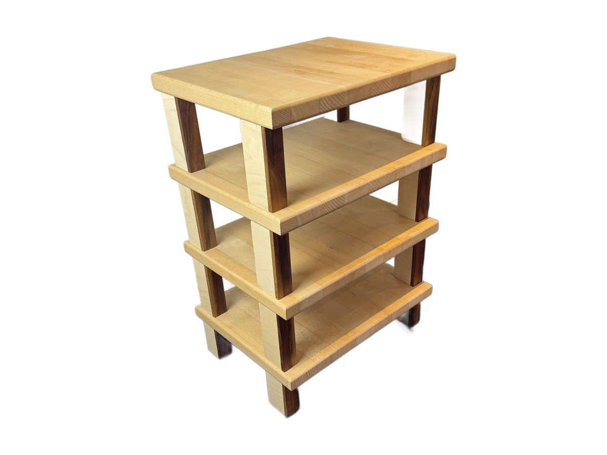
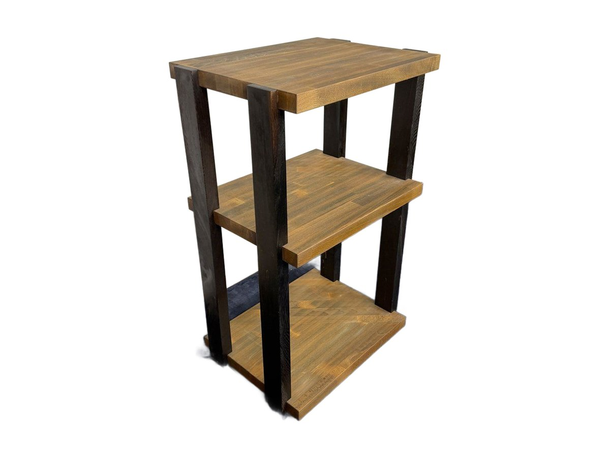
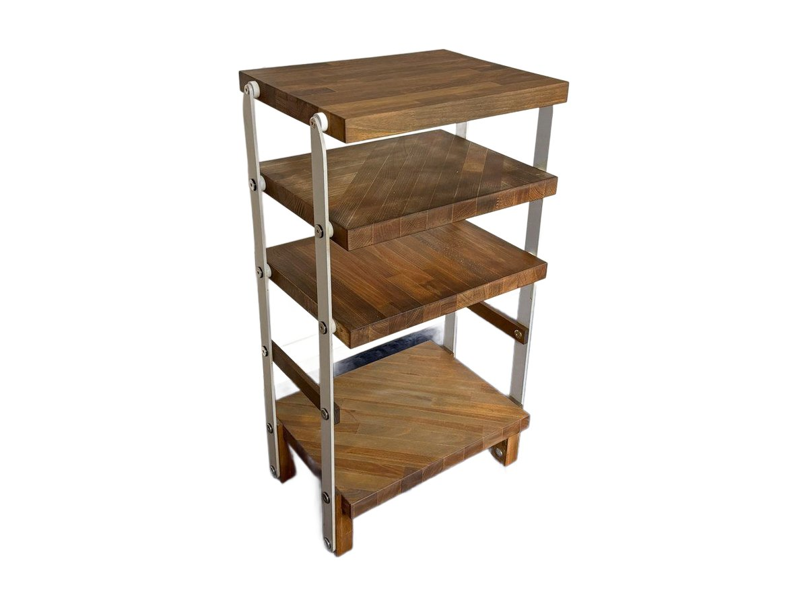
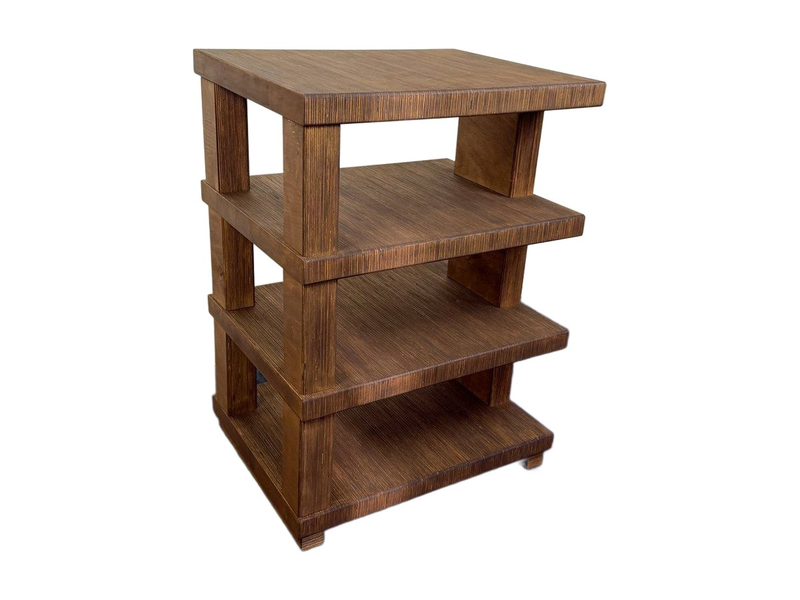
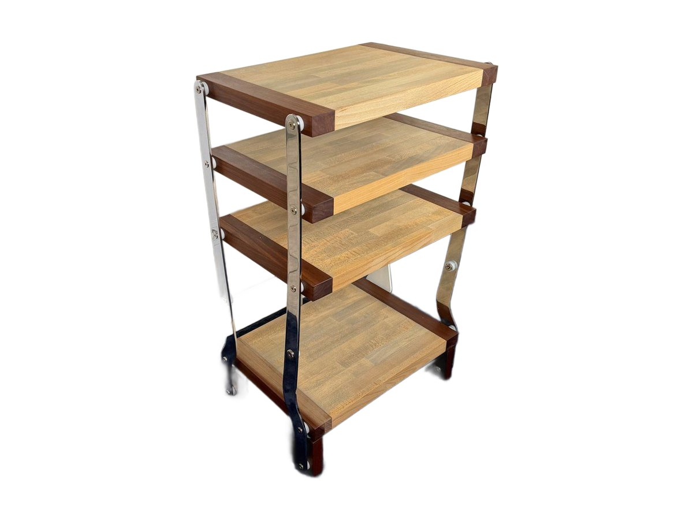
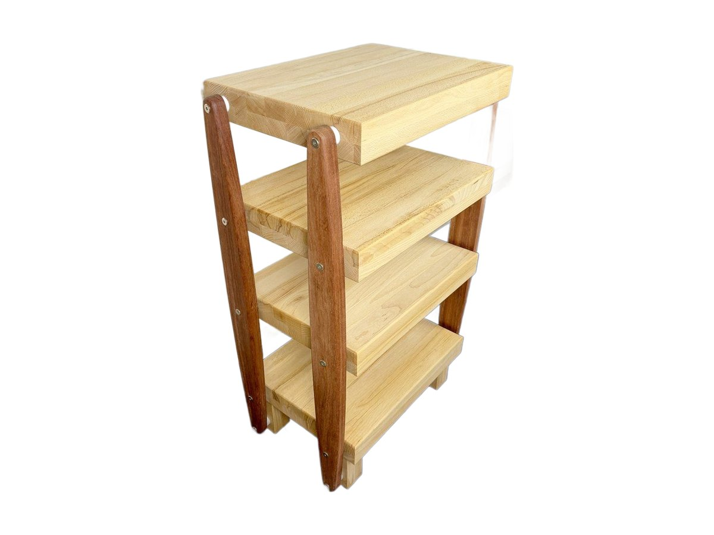
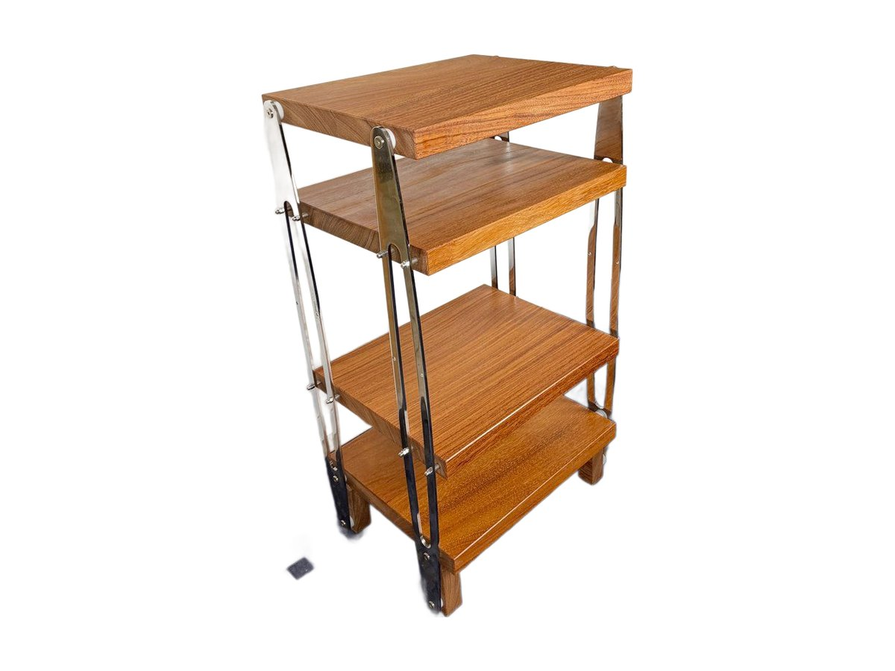
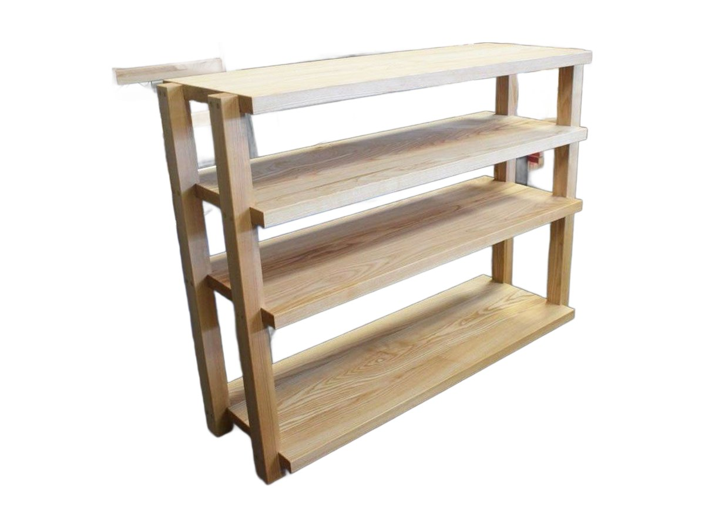

Mobili hi-fi
Mobili hi-fi in legno, fatti a mano.
Per giradischi, amplificatori ed elettroniche. Ogni ripiano è pensato sul peso e sulle misure degli apparecchi, e il legno massello tiene fermo l'impianto.

Mobile hi-fi Extrasound Vinyl
In cima il giradischi, al centro l'amplificatore, sotto fino a 90 vinili. In legno massello di Faggio o di Noce Canaletto.
Scopri il Vinyl
Mobile hi-fi Extrasound Classic
Il mobile hi-fi più semplice: quattro ripiani in faggio massello naturale, solido e compatto, per salotto o studio.
Scopri Classic
Mobile hi-fi Extrasound Elegant
Tre ripiani in faggio massello tra montanti in wengè massello, quasi nero: un contrasto netto per giradischi ed elettroniche.
Scopri Elegant
Mobile hi-fi Extrasound Minimal
Quattro ripiani in faggio massello tinto noce da 38 mm, su montanti in acciaio verniciato: linee pulite per un impianto in ordine.
Scopri Minimal
Mobile hi-fi Extrasound Style Council
Un mobile compatto e massiccio: quattro ripiani in multistrato di faggio spessi 4,4 cm, fianchi pieni, piano superiore tutto utilizzabile.
Scopri Style Council
Mobile hi-fi Extrasound Multiblade
Ripiani in faggio massello con i bordi in mogano, su montanti in acciaio cromato: quattro piani per giradischi, elettroniche e accessori.
Scopri Multiblade
Mobile hi-fi Extrasound Tangerine
Ripiani in faggio massello spessi ben 68 mm, retti da montanti in bubinga: un mobile importante, fatto per impianti di qualità.
Scopri Tangerine
Mobile hi-fi Extrasound Leaf
Quattro ripiani in doussiè massello spessi 4 cm, retti da montanti in acciaio cromato: un mobile caldo e luminoso per giradischi ed elettroniche.
Scopri Leaf
Mobile hi-fi Extrasound Floor
Un mobile basso e largo in frassino massello: piani da 80 × 40 cm spessi 4 cm, per un impianto completo con tutto a portata di mano.
Scopri FloorTi serve una misura diversa?
Fabrizio costruisce anche pezzi nuovi, sulle misure dei tuoi apparecchi e della tua casa.